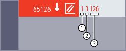
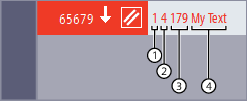
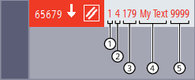

Alarms can be set from within an NC program.
The alarm text to be configured via the user interface is output in the status display of the user interface.
Alarm texts can contain predefined parameters or parameters with variable user texts.
An alarm always goes hand in hand with a response from the control according to the alarm category.
| Predefined procedure for setting an alarm SETAL must be programmed in a separate NC block. | ||
| Alarm number | ||
Data type: | INT | ||
Value range: | 60000 ... 64999 (reserved) | Alarms for SIEMENS cycles | |
65000 ... 69999 | Alarms for user cycles | ||
| String (optional) | ||
Data type: | STRING | ||
Alarm texts are configured in the user interface.
More information:
→ Commissioning Manual "Final commissioning steps"
User cycle alarms can contain the parameter values %1 ... %4:
The following examples are used to demonstrate the output of the alarm parameter values. For reasons of clarity, no alarm text has been stored in the alarms used, so that only the values of the transmitted parameters are output in sequence.
| Program code | Comment |
|---|---|
| N10 ... | |
| N20 ... | |
| N30 SETAL(65126) | ; Set alarm no. 65126 |
| ... |
After the SETAL call, the following information appears in the status display of the user interface:
① | Channel number = 1 |
② | Block number = 3 (3rd program line) |
③ | Offset value = 126 (65126 - 65000 = 126) |
| Program code | Comment |
|---|---|
| N10 ... | |
| N20 ... | |
| N30 ... | |
| N40 SETAL(65679, "My Text") | ; Set alarm no. 65679 |
| ... |
After the SETAL call, the following information appears in the status display of the user interface:
① | Channel number = 1 |
② | Block number = 4 (4th program line) |
③ | Offset value = 179 (65679 - 65500 = 179) |
④ | String specified in the SETAL call |
| Program code | Comment |
|---|---|
| N10 ... | |
| N20 ... | |
| N30 ... | |
| N40 SETAL(65679, "My Text " <<9999) | ; Set alarm no. 65679 |
| ... |
After the SETAL call, the following information appears in the status display of the user interface:
① | Channel number = 1 | |
② | Block number = 4 (4th program line) | |
③ | Offset value = 179 (65679 - 65500 = 179) | |
④ ⑤ | Chained string specified in the SETAL call | |
④ | The string of data type STRING specified in the SETAL call in quotes "" forms the first section of the chained string. | |
⑤ | The following value of data type INT specified with the chaining operator << forms the second section of the chained string. It is converted to the STRING data type and appended to the first section. | |
| Note |
Chaining to form a common string is only possible if the value to be appended is preceded by the chaining operator <<. Otherwise no conversion into the data type STRING takes place and the alarm 12330 "Type of parameter ... wrong" is output. |
See also:
Currently set language in the HMI
Setting an alarm (SETAL): More information